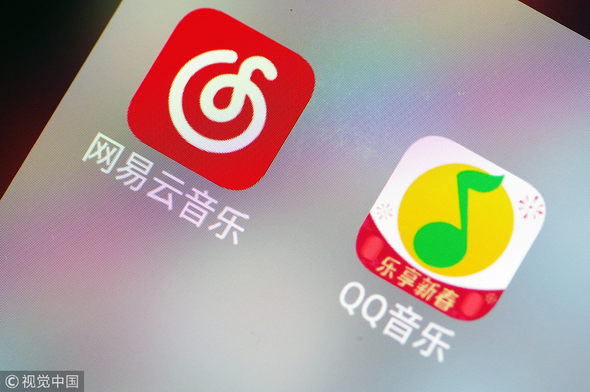
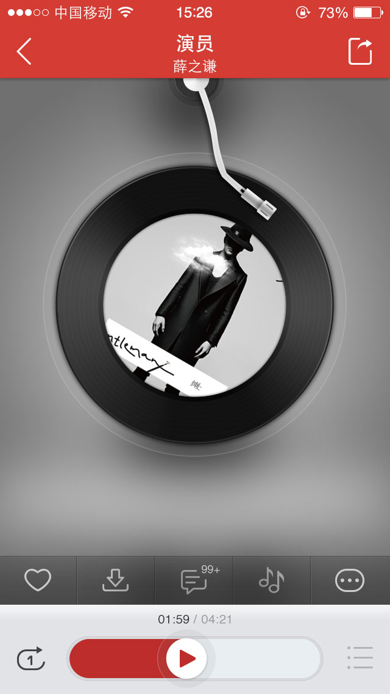
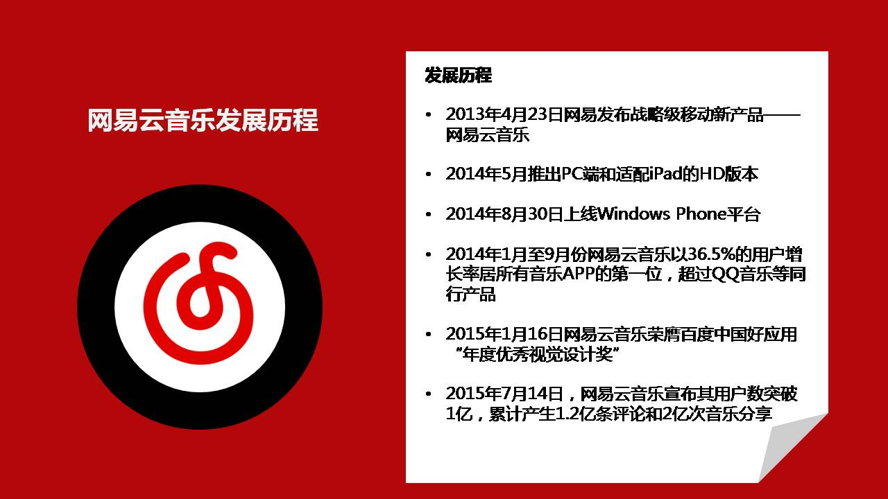

网易云音乐是一款专注于发现与分享的音乐产品，依托专业音乐人、DJ、好友推荐及社交功能，在线音乐服务主打歌单、社交、大牌推荐和音乐指纹，以歌单、DJ节目、社交、地理位置为核心要素，主打发现和分享。 该产品2013年4月23日正式发布，截止2017年04月，产品已经包括iPhone、Android、Web、PC、iPad、WP8、Mac、Win10UWP、Linux九大平台客户端。 2015年1月16日，网易云音乐荣膺百度中国好应用“年度优秀视觉设计奖”。2017年3月8日，新版本中，云音乐要做泛娱乐内容社区和推出了短视频功能。12月网易云音乐联合口碑推出“万有引力计划”。2018年3月6日，阿里音乐与网易云音乐共同对外宣布，双方达成音乐版权互相转授权的合作。
1、大牌DJ为你推荐音乐
DJ包括人气歌手、主持人以及知名音乐人。DJ节目以十几分钟的音频为形式，类似轻量级的电台节目，但会在页面中显示该节目包含的歌曲信息，可以直接对这些歌曲进行收藏。
2、各类主题的歌单
应用首页展示了各类歌单和推荐DJ，有比较熟悉的榜单，也有主题性质的歌单，比如滚石最伟大的英文歌曲、看球听歌等。此外还包括人气歌手推荐的自己喜欢的歌曲。3、融合社交元素
一般音乐产品最头痛的事莫过于没有社交链条，但网易云音乐让用户通过绑定手机通讯录、#微博、人人网等发现已有用户，关注对方后，可以看到朋友的音乐行为。4、添加地理位置功能
用户可以查看身边在使用网易云音乐听歌的人和他在听的歌曲，也可以添加关注。
5、强化用户自建歌单
由于产品引导用户绑定了账号，让用户自建歌单显得方便了很多。另外，只有进入了歌单才能下载。因此，鼓励用户生成内容的行为也添加了用户黏性。
相比市场上其他音乐产品，网易云音乐主打歌单、社交、大牌推荐、音乐指纹技术四个功能，其主要特点包括：
1.用户可以根据自己的喜好创建、收藏、分享歌单，应用以用户创造的歌单为基本线索。
2.用户可以导入原有手机通讯录、SNS关系，或者借助网易云音乐自身LBS功能构建音乐社交圈。
3.用户可以建立自己的主页，可以互相关注，分享音乐，用户的动态在这个圈子里即时呈现。
4.网易云音乐包含DJ及音乐人独家自制节目。
5.应用音乐指纹技术，通过听取音乐旋律，帮助用户找到歌曲。
2013年4月23日，网易发布战略级移动新产品——网易云音乐，叶蓓、陈楚生、吉杰、陆虎和李霄云等歌手参与发布会。 2014年5月也已经推出了PC端和适配iPad的HD版本。8月30日上线Windows Phone平台。 TalkingData移动数据研究中心发布的数据显示，2014年1月至9月份，网易云音乐以36.5%的用户月增长率居所有音乐类APP的第一位，超过QQ音乐等同行产品。 2015年1月16日，网易云音乐荣膺百度中国好应用“年度优秀视觉设计奖”。7月14日，网易云音乐宣布其用户数突破1亿，累计产生1.2亿条乐评和2亿次的音乐分享。 2016年5月25日，网易云音乐上线国内在线音乐应用中首个Linux版。2017年2月27日，网易云音乐与日本最大娱乐集团爱贝克思（avex）达成独家版权战略合作3月8日， 网易云音乐版本更新，增加了泛娱乐内容社区和短视频功能4月11日，网易云音乐已确定获得A轮融资，此轮融资金额为7.5亿元，由上海广播电视台、上海文化广播影视集团（简称“SMG”）战略领投， 芒果文创（上海）股权投资基金（简称“芒果文创”）、中金佳泰基金参投，此轮融资后，网易云音乐估值为80亿元7月25日，网易云音乐上线品牌影片《音乐的力量》。 7月底，网易云音乐因版权原因，下架部分歌曲、腾讯暂停与网易云音乐内容转授合作。12月，网易云音乐联合口碑推出“万有引力计划”。 2018年3月6日，阿里音乐与网易云音乐共同对外宣布，双方达成音乐版权互相转授权的合作。
